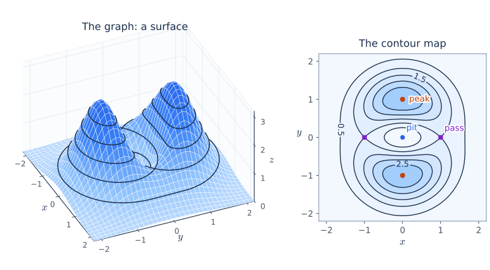
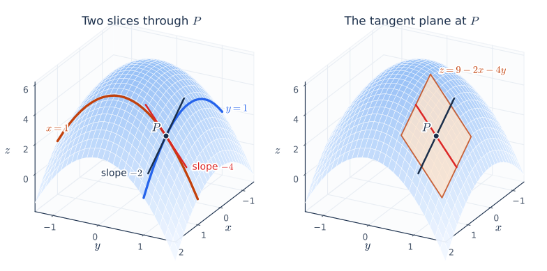
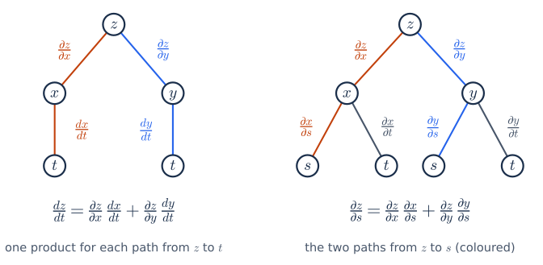
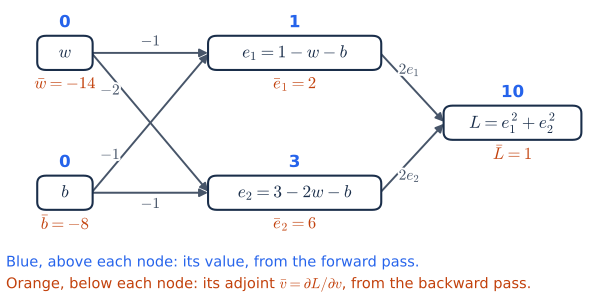

Extend the derivative to functions of several variables. You will read surfaces and contour maps, compute partial derivatives, tangent planes and linear approximations, and use the chain rule with tree diagrams; then you will find the direction of steepest ascent with the gradient and put it to work as machine learning does, in gradient descent and backpropagation.
⏱ 270 minYou need: Modules 1 to 16, especially limits (Module 2), the chain rule (Module 5), linearisation (Module 7), gradient descent (Module 8), and vectors, the dot product and planes (Module 16)
In this module you will
Describe a function of two or three variables by its domain, its graph, and its level curves or level surfaces
Decide whether a limit in two variables exists, by comparing paths or by squeezing
Compute partial derivatives of every order, and use Clairaut’s theorem
Find tangent planes and linear approximations, and explain why differentiability needs more than partial derivatives
Apply the chain rule with tree diagrams, including implicit differentiation
Compute directional derivatives and gradients, and use them for steepest ascent, gradient descent and backpropagation
1
Functions of several variables
So far this series has concentrated on functions of one independent variable. Most quantities depend on several. The volume of a cylindrical can depends on its radius r and its height h:V=πr2h. The temperature on a weather map depends on two coordinates, the temperature in a room on three, and the error of a machine-learning model on all of its parameters, often millions of them. This module extends the derivative to such functions. Two variables already show the main new ideas, and most of what follows carries over to three variables, or to a million, unchanged.
Definition 17.1Function of two variables
A function of two variablesf is a rule that assigns to each ordered pair of real numbers (x,y) in a set D exactly one real number f(x,y), read “f of x, y”. The set D, a set of points of the plane, is the domain of f, and the set of all values f(x,y) for (x,y) in D is its range. A function of three variables assigns a number f(x,y,z) to each point (x,y,z) of a set D in space.
As in Module 1, when a function is given by a formula and nothing is said about its domain, the domain is the set of all points at which the formula gives a real number. One often writes z=f(x,y) and calls x and y the independent variables and z the dependent variable.
Example 17.1Domains and ranges✓ Checked
Find the domain and the range of (a) f(x,y)=9−x2−y2 and (b) g(x,y)=ln(y−x2).
(a) The square root needs 9−x2−y2≥0, that is, x2+y2≤9. Since x2+y2 is the square of the distance from (x,y) to the origin (Module 16), the domain is the disc of radius 3 centred at the origin, together with its edge, the circle x2+y2=9. On the domain, 9−x2−y2 lies between 0 and 9, so f(x,y) lies between 0 and 3. Every number in [0,3] is a value: along the x-axis, f(x,0)=9−x2 runs through all of [0,3] as x runs from 3 down to 0. The range is [0,3].
(b) The logarithm needs y−x2>0, that is, y>x2: the domain is the region above the parabola y=x2, without the parabola itself. Along the y-axis, g(0,y)=lny takes every real value as y runs through (0,∞), so the range is R.
Graphs
The graph of a function f of two variables is the set of points (x,y,z) in space with z=f(x,y) and (x,y) in the domain. Above each point (x,y) of the domain it has exactly one point, at height f(x,y). For a continuous function on a region of the plane, picture the graph as a surface (Figure 17.1, left). The graph of f(x,y)=9−x2−y2 from Example 17.1 is a dome: squaring z=9−x2−y2 gives x2+y2+z2=9 with z≥0, the upper half of the sphere of radius 3 centred at the origin. The graph of a linear function f(x,y)=ax+by+c is a plane (Module 16).
Drawing a surface by hand is hard, and even a computer’s picture of one hides some parts behind others. Mapmakers met this problem long ago.
Level curves and contour maps
A hiking map does not show a mountain in three dimensions. It draws contour lines, each joining the points at one height above sea level, and labels them with their heights. Weather maps do the same with isotherms, curves of equal temperature, and isobars, curves of equal air pressure.
Definition 17.2Level curves
The level sets of a function f of two variables are the sets of points satisfying f(x,y)=k, for constants k in the range of f. They are usually curves, called level curves, but a level set can also be a single point or a whole region. A drawing of level curves for equally spaced values of k, labelled with the values, is a contour map of f.
The level curve f(x,y)=k is the set of points of the domain above which the surface has height k: cut the surface with the horizontal plane z=k, and look at the cut from above. Figure 17.1 shows a surface with two peaks, with its level curves drawn on it at their heights, and the contour map that they make.

Figure 17.1
Left: the graph of f(x,y)=(x2+3y2)e1−x2−y2, a landscape with two peaks of height 3 at (0,±1), a pit at the origin and two passes at (±1,0). Its level curves f=0.5,1,1.5,2,2.5 are drawn on the surface at their heights. Right: the same level curves seen from above, the contour map. The level curve f=1 crosses itself at the passes.
A contour map is read like this:
Where the level curves crowd together, the surface is steep; where they spread out, it is gentle. Equal steps in height take little horizontal distance on a steep slope.
Small closed level curves nested around a point mark a peak or a pit; the labels tell you which.
At the passes in Figure 17.1, the level curve f=1 crosses itself.
Example 17.2Level curves of a dome✓ Checked
Describe the level sets f(x,y)=k of f(x,y)=9−x2−y2 for k=0,1,2,3, and explain how they show the shape of the dome.
For 0≤k≤3,9−x2−y2=k means 9−x2−y2=k2 (both sides are non-negative, so squaring loses nothing), that is,
x2+y2=9−k2,
the circle centred at the origin with radius 9−k2. The radii are 3, 8≈2.83,5≈2.24 and 0: for k=3 the “circle” is the single point (0,0), the top of the dome. The gaps between consecutive circles are about 0.17, 0.59 and 2.24. The circles crowd together near the edge, where the dome is steep (its sides are vertical there), and spread out near the top, where it is nearly flat.
Watch out
A contour map without labels cannot tell a peak from a pit: both can have nested closed curves. Read the labels. And do not confuse level curves with the graph: the positive level curves of f(x,y)=x2+y2 are circles, while its level set at 0 is a point. Its graph is a bowl, the surface z=x2+y2, whose horizontal cuts at positive heights are those circles.
Three variables and level surfaces
The graph of a function of three variables would need four dimensions. Instead, one studies its level surfacesf(x,y,z)=k. For the temperature in a room, they are the surfaces of equal temperature. For f(x,y,z)=x2+y2+z2, the square of the distance from the origin, the level surface f=k is the sphere of radius k centred at the origin when k>0, the single point (0,0,0) when k=0, and empty when k<0. Section 17.6 finds tangent planes to level surfaces.
2
Limits and continuity
On the number line, x can approach a from two sides only. In the plane, (x,y) can approach (a,b) from every direction, along straight lines, spirals or any other path, and a limit must not depend on the path.
Definition 17.3Limit
Let f be defined at every point of a disc centred at (a,b), except perhaps at (a,b) itself. Then
(x,y)→(a,b)limf(x,y)=L,
read “the limit of f of x, y as (x, y) approaches (a, b) is L”, if for every number ε>0 there is a number δ>0 such that ∣f(x,y)−L∣<ε for every point (x,y) with
0<(x−a)2+(y−b)2<δ.
This is the ε–δ definition of Section 2.7, with the distance ∣x−a∣ on the line replaced by the distance in the plane: the values f(x,y) are as close to L as you like at all points close enough to (a,b), in whatever direction they lie. (A disc centred at (a,b) is the set of points at a distance less than some radius ρ>0 from it. When (a,b) is on the edge of the domain, as (3,0) is for the dome of Example 17.1, the same definition is used with (x,y) restricted to the domain, as one-sided limits restrict x to one side.)
The limit laws of Module 2 hold, with the same proofs: limits of sums, products and quotients are the sums, products and quotients of the limits (for quotients, when the limit of the denominator is not 0). In particular, for a polynomial in x and y, or a rational function whose denominator is not 0 at (a,b), the limit is the value. For example, lim(x,y)→(1,2)x+yx2y+1=32+1=1.
Paths
Here is a function with no limit at the origin:
f(x,y)=x2+y2xy,(x,y)=(0,0).
Approach the origin along four lines, with x=t shrinking towards 0:
t
f(t,0)
f(t,t)
f(t,2t)
f(t,−t)
0.1
0
0.5
0.4
−0.5
0.01
0
0.5
0.4
−0.5
0.001
0
0.5
0.4
−0.5
−0.001
0
0.5
0.4
−0.5
Along each line the values do not change at all, but they differ from line to line: 0 along the x-axis, 0.5 along y=x, 0.4 along y=2x and −0.5 along y=−x. However close to the origin you look, there are values near 0.5 and values near −0.5, so no single number L satisfies Definition 17.3.
Theorem 17.1Limits along paths
Suppose that lim(x,y)→(a,b)f(x,y)=L, and let x(t) and y(t) be functions with x(t)→a and y(t)→b as t→t0. Suppose also that (x(t),y(t)) lies in the domain of f and differs from (a,b) for t=t0 near t0. Then
t→t0limf(x(t),y(t))=L.
So if f approaches different numbers along two such paths, or no number along one of them, then lim(x,y)→(a,b)f(x,y) does not exist.
Proof
Let ε>0, and take δ as in Definition 17.3. As t→t0, the distance (x(t)−a)2+(y(t)−b)2 tends to 0, so it is less than δ for every t=t0 close enough to t0; and it is not 0 there, since the point is not (a,b). For those t,∣f(x(t),y(t))−L∣<ε, which is what limt→t0f(x(t),y(t))=L means. If the limit existed, it would therefore be the limit along every path, which is impossible when two paths give different numbers.
∎
Example 17.3A limit that depends on the path✓ Checked
Show that lim(x,y)→(0,0)x2+y2xy does not exist.
Along the line y=mx, with x=0,
f(x,mx)=x2+m2x2x⋅mx=(1+m2)x2mx2=1+m2m.
So f is constant along each line through the origin: 0 along the x-axis (m=0) and 21 along y=x (m=1). Two paths give two different limits, so by Theorem 17.1 the limit does not exist. Near the origin the graph is a twisted surface: every value from −21 to 21 (the range of m/(1+m2)) is taken on a whole line through the origin, arbitrarily close to it.
Watch out
Agreement along every straight line does not prove that a limit exists. For g(x,y)=x4+y2x2y, every line through the origin gives the limit 0: along y=mx,g=x2+m2mx, which tends to 0 (for m=0 it is 0), and along the y-axisg=0. But along the parabola y=x2,g=2x4x4=21. The limit does not exist. To prove that a limit exists, you need an argument that covers all points near (a,b) at once.
Squeezing
The squeeze theorem of Section 2.6 gives such an argument.
Theorem 17.2The squeeze theorem in two variables
Suppose that ∣f(x,y)−L∣≤g(x,y) for every point (x,y)=(a,b) of a disc centred at (a,b), and that lim(x,y)→(a,b)g(x,y)=0. Then lim(x,y)→(a,b)f(x,y)=L.
Proof
Let ε>0. Since g→0, there is a δ>0, which may be taken no larger than the radius of the disc, such that g(x,y)<ε whenever 0<(x−a)2+(y−b)2<δ. For those points, ∣f(x,y)−L∣≤g(x,y)<ε.
∎
Example 17.4A limit by squeezing✓ Checked
Find lim(x,y)→(0,0)x2+y23x2y.
Along the line y=mx the function is (1+m2)x23mx3=1+m23mx, which tends to 0, and along the y-axis it is 0. So if the limit exists, it is 0 (Theorem 17.1). To prove that it exists, squeeze. For (x,y)=(0,0),x2≤x2+y2, so x2+y2x2≤1 and
x2+y23x2y−0=3∣y∣x2+y2x2≤3∣y∣.
As (x,y)→(0,0),3∣y∣→0, because ∣y∣≤x2+y2. By Theorem 17.2 the limit is 0. In ε–δ terms, δ=ε/3 works: x2+y2<ε/3 gives 3∣y∣<ε.
Continuity
Definition 17.4Continuity
Let f be defined on a disc centred at (a,b). Then f is continuous at (a,b) if
(x,y)→(a,b)limf(x,y)=f(a,b).
It is continuous on a set if it is continuous at every point of the set (at points on the edge of the domain, with the limit taken over points of the domain).
As in Module 3, sums, products and quotients of continuous functions are continuous (quotients where the denominator is not 0), and so are compositions: if g(x,y) is continuous at (a,b) and a function h of one variable is continuous at g(a,b), then h(g(x,y)) is continuous at (a,b). Since x and y themselves are continuous, every polynomial in x and y is continuous everywhere, every rational function wherever its denominator is not 0, and functions such as exysiny and ln(x2+y2) wherever they are defined.
At a point where a formula breaks down, look closer. The functions of Examples 17.3 and 17.4 are both undefined at the origin. Give each the value 0 there: the function of Example 17.4 becomes continuous everywhere, since its limit at the origin is 0, but the function of Example 17.3 is not continuous at the origin, since it has no limit there. It returns in Section 17.4, as a warning.
3
Partial derivatives
Take a can of radius r=3 cm and height h=10 cm, with volume V(3,10)=90π≈282.7 cm³. How fast does the volume change when the radius changes and the height does not? Widen the can by Δ cm, or make it Δ cm taller, and divide each change of volume by Δ:
Δ
ΔV(3+Δ,10)−V(3,10)
ΔV(3,10+Δ)−V(3,10)
1
219.911
28.2743
0.1
191.637
28.2743
0.01
188.810
28.2743
0.001
188.527
28.2743
−0.001
188.464
28.2743
With the height held at 10, V=10πr2 is a function of r alone, and the first column approaches its derivative at r=3,20πr=60π≈188.5. With the radius held at 3, V=9πh is a linear function of h, and the second column is its slope, 9π≈28.27, whatever Δ is. These two numbers are the partial derivatives of V at (3,10): near this size the volume grows by about 188.5 cm³ per centimetre of radius and by about 28.3 cm³ per centimetre of height. Widening the can adds volume more than six times as fast as lengthening it.
Definition 17.5Partial derivatives
Let f be a function of two variables defined on a disc centred at (a,b). The partial derivative of f with respect to x at (a,b) is
fx(a,b)=h→0limhf(a+h,b)−f(a,b),
and the partial derivative with respect to y is
fy(a,b)=h→0limhf(a,b+h)−f(a,b),
provided that the limits exist.
fx reads “f sub x”. Other notations are ∂x∂f, read “partial f by partial x” (the rounded ∂, read “partial”, warns that f has other variables, held fixed), and ∂x∂z when z=f(x,y). Letting the point vary gives two new functions of two variables, fx(x,y) and fy(x,y).
The definition says that fx(a,b) is the ordinary derivative at a of the function of one variable x↦f(x,b), in which y is frozen at b. That gives the rule for computing partial derivatives.
Key idea
To find fx, treat y as a constant and differentiate with respect to x by the rules of Modules 4 to 6. To find fy, treat x as a constant and differentiate with respect to y.
Geometrically, the vertical plane y=b cuts the surface z=f(x,y) along the curve z=f(x,b), and fx(a,b) is the slope of that curve at the point P(a,b,f(a,b)): the rate at which the surface rises as you move from P in the direction of the positive x-axis. Likewise fy(a,b) is the slope of the curve cut by the plane x=a (Figure 17.2, left). For f(x,y)=6−x2−2y2 at P(1,1,3), the plane y=1 cuts out the curve z=4−x2, of slope −2x=−2 at x=1, and the plane x=1 cuts out z=5−2y2, of slope −4y=−4 at y=1. So fx(1,1)=−2 and fy(1,1)=−4; by the rule, fx=−2x and fy=−4y everywhere.

Figure 17.2
Left: the surface z=6−x2−2y2 and the point P(1,1,3). The plane y=1 cuts out the blue curve z=4−x2, whose tangent line at P (dark) has slope fx(1,1)=−2; the plane x=1 cuts out the orange curve z=5−2y2, whose tangent line (red) has slope fy(1,1)=−4. Right: the tangent plane z=9−2x−4y at P (Section 17.4) contains both tangent lines.
Computing partial derivatives
Example 17.5Partial derivatives by the rules✓ Checked
Find the partial derivatives of (a) f(x,y)=x3y2−5xy+2y3, with their values at (1,2), (b) g(x,y)=sin(xy2) and (c) q(x,y)=x2+y2x.
(a) With y held constant, y2 is a constant factor of x3y2,−5y a constant factor of x, and 2y3 a constant:
fx=3x2y2−5y,fy=2x3y−5x+6y2.
At (1,2):fx(1,2)=12−10=2 and fy(1,2)=4−5+24=23.
(b) By the chain rule, with the inner function xy2, whose partial derivatives are y2 and 2xy:
gx=y2cos(xy2),gy=2xycos(xy2).
(c) By the quotient rule. With y constant, the derivative of the denominator is 2x, so
qx=(x2+y2)2(x2+y2)−x⋅2x=(x2+y2)2y2−x2.
With x constant, the numerator is a constant, so
qy=−(x2+y2)2x⋅2y=−(x2+y2)22xy,
both for (x,y)=(0,0).
Watch out
When you differentiate with respect to x, a factor that contains only y is a constant: ∂x∂(x3y2)=3x2y2, not 3x2y2+2x3y, and ∂x∂(y3)=0. The product rule is needed only when both factors contain x.
For a function of three variables, fx,fy and fz are defined in the same way, each with the other two variables held fixed. For w=xy2z3:wx=y2z3,wy=2xyz3 and wz=3xy2z2.
Higher partial derivatives
The partial derivatives fx and fy are again functions of x and y. Where their partial derivatives exist, these are the four second partial derivatives of f:
fxy reads “f sub x y”. Mind the order: in fxy you differentiate first with respect to x, then y, reading from left to right; in ∂y∂x∂2f, the same derivative, you read from right to left. fxy and fyx are the mixed partial derivatives.
Example 17.6Second partial derivatives✓ Checked
Find the four second partial derivatives of f(x,y)=x3y2−5xy+2y3 from Example 17.5, and the mixed partial derivatives of g(x,y)=sin(xy2).
Both times the mixed partial derivatives agree, though they were computed in different ways.
The agreement is no accident.
Theorem 17.3Clairaut’s theorem
Suppose that f is defined on a disc D that contains the point (a,b). If the functions fxy and fyx are both continuous on D, then fxy(a,b)=fyx(a,b).
The mixed partial derivatives in Examples 17.5 and 17.6 are continuous wherever the functions are defined, so there the order of differentiation does not matter. The hypothesis cannot be dropped: Exercise 17.10 gives a function with fxy(0,0)=−1 but fyx(0,0)=1. The theorem extends to higher derivatives: for example, fxyy=fyxy=fyyx on a disc where all partial derivatives through order 3 exist and are continuous.
Going deeperThe proof of Clairaut’s theorem
A first reading may skip this proof. It uses the Mean Value Theorem (Theorem 8.4) four times. For a small h=0, so small that the square with corners (a,b) and (a+h,b+h) lies in D, consider the combination of four values
Δ(h)=f(a+h,b+h)−f(a+h,b)−f(a,b+h)+f(a,b).
First grouping. Let G(x)=f(x,b+h)−f(x,b), so that Δ(h)=G(a+h)−G(a). The partial derivative fx exists on D (it must, for fxy to exist there), so G is differentiable, with G′(x)=fx(x,b+h)−fx(x,b). By the Mean Value Theorem there is a number c between a and a+h with
Δ(h)=hG′(c)=h(fx(c,b+h)−fx(c,b)).
The function y↦fx(c,y) has the derivative fxy(c,y), so by the Mean Value Theorem again there is a number d between b and b+h with fx(c,b+h)−fx(c,b)=hfxy(c,d). So Δ(h)=h2fxy(c,d).
Second grouping. Let H(y)=f(a+h,y)−f(a,y), so that Δ(h)=H(b+h)−H(b). The same two steps, first in y and then in x, give numbers c′ and d′, within ∣h∣ of a and b, with Δ(h)=h2fyx(c′,d′).
So fxy(c,d)=fyx(c′,d′) for every small h=0. As h→0, both points (c,d) and (c′,d′) approach (a,b), and since fxy and fyx are continuous there, the two sides approach fxy(a,b) and fyx(a,b). Equal quantities have equal limits.
Many laws of physics are equations between partial derivatives, called partial differential equations. For a thin, uniform rod insulated along its sides, with no internal heat sources, the temperature u(x,t) is modelled by the heat equationut=kuxx, with constant k>0 determined by the material. For a thin, uniform flat plate insulated on its faces, with no internal heat sources, steady temperatures satisfy Laplace’s equationuxx+uyy=0 (Exercise 17.9). Solving such equations is beyond this course, but checking a solution needs only partial derivatives: u=e−tsinx satisfies the heat equation with k=1, since ut=−e−tsinx and uxx=−e−tsinx.
Compute itPartial derivatives with SymPy
sp.diff takes partial derivatives: name the variable, and SymPy holds the others fixed. Several variables in a row give higher derivatives, taken in the order written:
Python
import sympy as sp
x, y = sp.symbols('x y')
f = x**3*y**2 - 5*x*y + 2*y**3# Example 17.5print(sp.diff(f, x), '|', sp.diff(f, y))
print(sp.diff(f, x, y), '|', sp.diff(f, y, x)) # f_xy and f_yxprint(sp.diff(f, x).subs({x: 1, y: 2})) # f_x(1, 2)
sp.diff(f, x, y) differentiates first with respect to x, then y: it is fxy. A repeated variable can be given with a count: sp.diff(f, x, 2) is fxx. The can from the start of this section:
SymPy writes 2πrh as 2*pi*h*r, with the factors in its own order. At (3,10) it is 60π≈188.5, the number that the first column of the table at the start of this section approaches.
4
Tangent planes and linear approximation
Zoom in on the graph of a differentiable function of one variable and it looks more and more like a straight line, its tangent line; Section 7.2 turned that into linear approximation. Zoom in on a smooth surface, and it looks more and more like a plane, its tangent plane.
Which plane? A plane through the point P(a,b,c) that is not vertical has an equation z−c=A(x−a)+B(y−b) (Module 16). The vertical plane y=b cuts it along the line z−c=A(x−a), of slope A. If the plane is to touch the surface at P, this line should be the tangent line of the curve that the same vertical plane cuts out of the surface, whose slope is fx(a,b). So A=fx(a,b), and in the same way B=fy(a,b): the tangent plane is the plane through the two tangent lines of Figure 17.2.
Definition 17.6Tangent plane
Suppose that the partial derivatives of f exist on a disc centred at (a,b) and are continuous at (a,b). The tangent plane to the surface z=f(x,y) at the point P(a,b,f(a,b)) is the plane
z=f(a,b)+fx(a,b)(x−a)+fy(a,b)(y−b).
This continuity condition guarantees that the plane fits the surface in every direction, not only in the two directions of the slices. The subsection on differentiability below explains why having partial derivatives alone is not enough.
Example 17.7A tangent plane✓ Checked
Find the tangent plane to the surface z=6−x2−2y2 at P(1,1,3).
The partial derivatives fx=−2x and fy=−4y are polynomials, continuous everywhere, and at (1,1) they are −2 and −4 (Section 17.3). The tangent plane is
zthat is,z=3−2(x−1)−4(y−1),=9−2x−4y.
It passes through P:9−2−4=3. The surface lies below it, because the difference is
(6−x2−2y2)−(9−2x−4y)=−(x−1)2−2(y−1)2,
which is negative except at (1,1). Like the graph of a concave down function and its tangent lines (Module 8), the surface bends away below its tangent plane (Figure 17.2, right).
The function whose graph is the tangent plane,
L(x,y)=f(a,b)+fx(a,b)(x−a)+fy(a,b)(y−b),
is the linearisation of f at (a,b), and f(x,y)≈L(x,y) for (x,y) near (a,b) is the linear approximation of f at (a,b). With Δx=x−a and Δy=y−b it reads
f(a+Δx,b+Δy)≈f(a,b)+fx(a,b)Δx+fy(a,b)Δy:
each variable contributes its own rate times its own change.
Example 17.8Linear approximation of a hypotenuse✓ Checked
A right triangle with legs 3 and 4 has hypotenuse 5. Use the linearisation of f(x,y)=x2+y2 at (3,4) to estimate the hypotenuse when the legs are 3.02 and 3.97.
By the chain rule, fx=x2+y2x and fy=x2+y2y, which are continuous wherever (x,y)=(0,0). At (3,4) they are 53 and 54, so
A calculator gives 3.022+3.972=24.8813≈4.98812: the estimate is off by about 0.00012.
How good is the approximation in general? Move from (3,4) to (3+t,4−t), a distance 2∣t∣ away, and compare f with L:
t
f
L
f−L
2tf−L
0.1
4.98197
4.98
0.00196748
0.0139122
0.01
4.99802
4.998
1.96078×10−5
0.00138648
0.001
4.99980
4.9998
1.96008×10−7
0.000138598
As in Module 7, the error f−L shrinks about a hundredfold each time the distance shrinks tenfold, so the error divided by the distance, in the last column, tends to 0: near (3,4) the error is small even compared with the distance from (3,4). That property is what makes a plane tangent.
Differentiability
Definition 17.7Differentiability
A function f defined on a disc centred at (a,b) is differentiable at (a,b) if fx(a,b) and fy(a,b) exist and the error of its linearisation, E(x,y)=f(x,y)−L(x,y), satisfies
(x,y)→(a,b)lim(x−a)2+(y−b)2E(x,y)=0.
It is differentiable on a set if it is differentiable at every point of the set.
For one variable, Theorem 7.1 showed that E(x)/(x−a)→0 whenever f′(a) exists. For two variables the two partial derivatives are not enough, as the Going deeper box below shows: differentiability asks the plane to fit in every direction at once. Two theorems make the definition usable. The first is the analogue of Theorem 4.1.
Theorem 17.4Differentiable functions are continuous
If f is differentiable at (a,b), then f is continuous at (a,b).
Proof
Write ρ=(x−a)2+(y−b)2. For (x,y)=(a,b),
f(x,y)=L(x,y)+ρE(x,y)ρ.
As (x,y)→(a,b):L(x,y)→L(a,b)=f(a,b), because L is a polynomial; E/ρ→0, by differentiability; and ρ→0. So f(x,y)→f(a,b)+0⋅0=f(a,b).
∎
Theorem 17.5Continuous partial derivatives give differentiability
If fx and fy exist on a disc centred at (a,b) and are continuous at (a,b), then f is differentiable at (a,b).
The proof is in the Going deeper box below. Theorem 17.5 is how differentiability is checked in practice. Polynomials are differentiable everywhere, and functions such as exysiny or ln(x2+y2) wherever they are defined: the rules give partial derivatives that are again formulas of the same kind, continuous there. The definition of the tangent plane (Definition 17.6) uses this sufficient condition. More generally, differentiability itself gives the tangent plane by the same formula, even if the partial derivatives are not continuous.
Going deeperPartial derivatives are not enough
A first reading may skip this box. Let f(x,y)=x2+y2xy for (x,y)=(0,0) and f(0,0)=0, the function of Example 17.3. On both axes f is 0, so
fx(0,0)=h→0limhf(h,0)−f(0,0)=h→0limh0−0=0,
and fy(0,0)=0 in the same way. Both partial derivatives exist, and the linearisation at the origin is L(x,y)=0. But f is not continuous at the origin (Section 17.2), so by Theorem 17.4 it is not differentiable there, and the plane z=0 is no tangent plane: along the line y=x the surface stays at height 21, however close to the origin. The partial derivatives see only the slices along the two axes, where this surface has height 0; along the other lines through the origin it has other heights.
Proof of Theorem 17.5. Let (x,y)=(a,b) be in the disc, and write Δx=x−a,Δy=y−b and ρ=Δx2+Δy2>0. Go from (a,b) to (x,y) in two legs, first changing y, then x:
f(x,y)−f(a,b)=[f(x,y)−f(a,y)]+[f(a,y)−f(a,b)].
For each nonzero leg, the Mean Value Theorem applies to f as a function of that variable alone. The brackets are fx(c,y)Δx and fy(a,d)Δy, with c between a and x and d between b and y. If Δx=0, the first bracket is 0 and we take c=a; if Δy=0, take d=b for the same reason. Subtract fx(a,b)Δx+fy(a,b)Δy from both sides:
As (x,y)→(a,b), the points (c,y) and (a,d) approach (a,b) too, so by the continuity of fx and fy at (a,b) the right side tends to 0. So does ∣E∣/ρ:f is differentiable at (a,b).
The total differential
The differentials of Section 7.2 have a version for several variables.
Definition 17.8Total differential
For a differentiable function z=f(x,y), let the differentialsdx and dy be independent variables. The total differential of z is
dz=fx(x,y)dx+fy(x,y)dy=∂x∂zdx+∂y∂zdy.
When x and y change by dx and dy, the actual change of z is Δz=f(x+dx,y+dy)−f(x,y), while dz is the change of the linearisation; Δz≈dz when dx and dy are small. As in Section 7.3, this propagates measurement errors, now from several measurements at once.
Example 17.9Measurement errors in a can✓ Checked
The radius and the height of a can are measured as r=3 cm and h=10 cm, with absolute errors of at most 0.02 cm in r and 0.05 cm in h. Estimate the largest possible absolute error in the computed volume V=πr2h, and the relative error.
dV=Vrdr+Vhdh=2πrhdr+πr2dh, and at (3,10),Vr=60π and Vh=9π. Take dr and dh to be the true values minus the measured values, so dV estimates the error with the sign convention of Module 7. The magnitude ∣dV∣ is largest when both terms have the same sign and each measurement error has its largest allowed magnitude:
So the computed volume, 90π≈282.7 cm³, may be off by about 5.2 cm³. This is an estimate from the tangent plane, not a bound on the exact volume error. Dividing dV by the measured volume V=πr2h gives
VdV=πr2h2πrhdr+πr2dh=2rdr+hdh,
The relative error is estimated by ∣dV∣/V. Here this estimate is at most 2⋅30.02+100.05≈0.0133+0.005=0.0183, about 1.8%. In this estimate the relative error in the radius counts twice, because the radius appears squared.
Watch out
dz is not Δz:dz is the change along the tangent plane and Δz the change along the surface. Differentiability makes the approximation accurate for sufficiently small changes. To estimate the largest absolute error, add the sizes of the terms, ∣fx∣∣dx∣+∣fy∣∣dy∣: errors in two measurements can push the result the same way. This bounds the differential; an exact error bound needs control of the remaining terms.
5
The chain rule
In one variable, rates multiply (Section 5.5). When z depends on x and y, and both depend on time t, a change in t reaches z by two routes, through x and through y, and the two contributions add.
Theorem 17.6The chain rule
Suppose that x=x(t) and y=y(t) are differentiable at t0, and that z=f(x,y) is differentiable at (x(t0),y(t0)). Then z=f(x(t),y(t)) is differentiable at t0, and
dtdz=∂x∂zdtdx+∂y∂zdtdy,
with the partial derivatives taken at (x(t0),y(t0)) and the other derivatives at t0.
Proof
Let Δt=0, and let Δx,Δy and Δz be the changes of x,y and z when t changes from t0 to t0+Δt. Write ρ=Δx2+Δy2. By the definition of differentiability,
Δz=fxΔx+fyΔy+E,
where E/ρ→0 as (Δx,Δy)→(0,0). Let ε=E/ρ when ρ=0 and ε=0 when ρ=0. Then E=ερ in both cases: if ρ=0, then x and y do not change, so neither does z, and E=0. Divide by Δt:
ΔtΔz=fxΔtΔx+fyΔtΔy+εΔtρ.
Let Δt→0. The quotients Δx/Δt and Δy/Δt tend to dx/dt and dy/dt. The changes Δx and Δy tend to 0, because differentiable functions are continuous, so ε→0; and ∣ρ/Δt∣=(Δx/Δt)2+(Δy/Δt)2 stays bounded, since it tends to (dx/dt)2+(dy/dt)2. So the last term tends to 0, and Δz/Δt tends to fxdtdx+fydtdy.
∎
Example 17.10A changing cylinder✓ Checked
The radius of a cylinder grows at 0.1 cm/s while its height shrinks at 0.3 cm/s. At the moment when r=3 cm and h=10 cm, is the volume growing or shrinking, and how fast?
By Theorem 17.6,
dtdV=∂r∂Vdtdr+∂h∂Vdtdh=2πrhdtdr+πr2dtdh.
At this moment ∂V/∂r=60π,∂V/∂h=9π,dr/dt=0.1 and dh/dt=−0.3, so
The volume is growing. The height shrinks three times as fast as the radius grows, but the volume is more than six times as sensitive to the radius.
Tree diagrams
With more variables, a tree diagram keeps track of the routes (Figure 17.3). Put the dependent variable at the top, the intermediate variables below it and the independent variables at the bottom, and join each variable to the variables it depends on directly. Label each branch with the derivative of the upper variable with respect to the lower one.
Key idea
The derivative of the top variable with respect to a bottom variable is the sum, over all paths from the top down to that variable, of the products of the labels along each path.

Figure 17.3
Tree diagrams for the chain rule. Left: z=f(x,y), with x and y functions of t; the two paths from z down to t give the two terms of Theorem 17.6. Right: x and y functions of s and t; the two coloured paths from z to s give ∂z/∂s, and the two paths to t give ∂z/∂t in the same way.
When x and y depend on two variables s and t, hold t fixed: then x and y are functions of s alone, and Theorem 17.6 applies with s in place of t. Derivatives with respect to s with t held fixed are partial derivatives, so:
Theorem 17.7The chain rule with two parameters
Suppose that x=x(s,t) and y=y(s,t) have partial derivatives at (s,t), and that z=f(x,y) is differentiable at (x(s,t),y(s,t)). Then
The same proof, with more terms, gives the general rule of the key idea. Differentiability is defined for n variables as for two, with the distance in n dimensions; if u is a differentiable function of x1,…,xn, each of which has partial derivatives with respect to t1,…,tm, then for each i
Let z=x2y, where x=rcosθ and y=rsinθ are given by polar coordinates (Module 16). Find ∂z/∂r and ∂z/∂θ at r=2,θ=π/6, and check by substituting first.
The tree is the right-hand one of Figure 17.3, with r and θ in place of s and t. The labels are zx=2xy,zy=x2,xr=cosθ,yr=sinθ,xθ=−rsinθ and yθ=rcosθ, so
Check: substituting first, z=r3cos2θsinθ, so ∂z/∂r=3r2cos2θsinθ=3⋅4⋅43⋅21=29. Also ∂z/∂θ=r3cosθ(cos2θ−2sin2θ), which at the given point is 8⋅23(43−21)=3. The chain rule needs no such substitution, which for a complicated f may be impractical.
Watch out
Every path contributes. A common slip is to write ∂s∂z=∂x∂z∂s∂x, as if the ∂x's cancelled, and to forget the path through y. Partial derivatives are not fractions, and with two intermediate variables the chain rule has two terms.
Implicit differentiation
Section 6.4 found slopes of curves such as the circle x2+y2=25 by differentiating their equations. The chain rule explains the method and turns it into a formula. Write the curve as F(x,y)=0, with F differentiable near the point in question, and suppose that near that point the curve is the graph of a differentiable function y=y(x). Then F(x,y(x))=0 for all x near the point. Differentiate with respect to x by Theorem 17.6, with x itself as the first intermediate variable (dx/dx=1):
Fx+Fydxdy=0,sodxdy=−FyFx(Fy=0).
Module 6 promised a theorem that guarantees the function y(x) whenever the coefficient of dy/dx, here Fy, is not 0:
Theorem 17.8The implicit function theorem
Suppose that F has continuous partial derivatives on a disc centred at (a,b), that F(a,b)=0, and that Fy(a,b)=0. Then near (a,b) the points of the curve F(x,y)=0 form the graph of a differentiable function y=y(x), defined on an open interval containing a, with y(a)=b and
dxdy=−Fy(x,y)Fx(x,y).
Its proof belongs to a course in analysis; this series uses the theorem without proof.
Example 17.12The folium of Descartes again✓ Checked
Find dy/dx on the folium x3+y3=6xy of Example 6.5 with the formula, and the slope at (3,3).
Write the curve as F(x,y)=x3+y3−6xy=0. Then Fx=3x2−6y and Fy=3y2−6x, so where y2=2x,
dxdy=−3y2−6x3x2−6y=y2−2x2y−x2,
the answer of Example 6.5. At (3,3),Fy=27−18=9=0, and the slope is 9−66−9=−1. At the origin Fx=Fy=0: the implicit function theorem says nothing there, and indeed the curve crosses itself.
In the same way, if F has continuous partial derivatives near a point on F(x,y,z)=0 and Fz=0 there, the equation defines z as a differentiable function of x and y near that point (the theorem has a version for three variables). Holding y fixed and differentiating F(x,y,z(x,y))=0 with respect to x gives Fx+Fz∂x∂z=0, and similarly for y:
∂x∂z=−FzFx,∂y∂z=−FzFy.
Example 17.14 uses these formulas.
6
Directional derivatives and the gradient
Stand on a hillside. How steep the ground is depends on which way you face: straight up the slope it is steep, along the slope it is level. The partial derivatives fx and fy give the slopes in two directions only, east and north on a map. This section finds the slope in every direction, and the direction in which it is steepest.
Definition 17.9Directional derivative
Let u=⟨u1,u2⟩ be a unit vector. The directional derivative of f at (a,b) in the direction of u is
Duf(a,b)=h→0limhf(a+hu1,b+hu2)−f(a,b),
provided that the limit exists.
Duf reads “D sub u of f”. The point (a+hu1,b+hu2) lies on the line through (a,b) in the direction of u, at a distance ∣h∣ from (a,b), because ∥u∥=1; so Duf(a,b) is the rate of change of f per unit of distance as you move from (a,b) in that direction. For u=i=⟨1,0⟩ it is fx(a,b), and for u=j=⟨0,1⟩ it is fy(a,b).
Definition 17.10Gradient
Provided that its partial derivatives exist, the gradient of f at (a,b) is the vector
∇f(a,b)=⟨fx(a,b),fy(a,b)⟩.
For a function of three variables, ∇f=⟨fx,fy,fz⟩.
The symbol ∇ is called “nabla”, and ∇f reads “del f” or “grad f”. The gradient of a function of two variables is a vector in the plane of its domain; when nonzero, it gives a direction on the contour map. If f is differentiable at (a,b), the linear approximation of Section 17.4 reads f(a+Δx,b+Δy)≈f(a,b)+∇f(a,b)⋅⟨Δx,Δy⟩, with the dot product of Module 16. Directional derivatives come from the gradient in the same way.
Theorem 17.9Directional derivatives from the gradient
If f is differentiable at (a,b), then f has a directional derivative at (a,b) in the direction of every unit vector u=⟨u1,u2⟩, and
Duf(a,b)=∇f(a,b)⋅u=fx(a,b)u1+fy(a,b)u2.
Proof
Let g(h)=f(a+hu1,b+hu2). The limit that defines Duf(a,b) is limh→0hg(h)−g(0)=g′(0). Here g is f composed with x(h)=a+hu1 and y(h)=b+hu2, whose derivatives are u1 and u2. By the chain rule (Theorem 17.6), g′(0) exists and
g′(0)=fx(a,b)u1+fy(a,b)u2=∇f(a,b)⋅u.
∎
Example 17.13A directional derivative✓ Checked
Let f(x,y)=xey. Find the rate of change of f at (2,0) in the direction of the point (5,4).
fx=ey and fy=xey are continuous, so f is differentiable (Theorem 17.5), and ∇f(2,0)=⟨e0,2e0⟩=⟨1,2⟩. The direction from (2,0) to (5,4) is v=⟨3,4⟩, of length 5, so the unit vector in that direction is u=v/∥v∥=⟨53,54⟩. By Theorem 17.9,
Duf(2,0)=⟨1,2⟩⋅⟨53,54⟩=53+58=511=2.2.
Moving from (2,0) towards (5,4),f increases at 2.2 units per unit of distance, faster than along either axis (fx=1,fy=2).
Steepest ascent
Theorem 17.10The direction of steepest ascent
Let f be differentiable at (a,b), with ∇f(a,b)=0. Among all unit vectors u, the directional derivative Duf(a,b)
is largest, equal to ∥∇f(a,b)∥, when u points in the direction of ∇f(a,b);
is smallest, equal to −∥∇f(a,b)∥, when u points in the opposite direction;
is 0 when u is perpendicular to ∇f(a,b).
Proof
Let θ be the angle between ∇f(a,b) and u. By Theorem 17.9 and the angle form of the dot product (Module 16),
since ∥u∥=1. As u turns, only cosθ changes. It is largest, 1, exactly when θ=0; smallest, −1, exactly when θ=π; and 0 when θ=π/2.
∎
So a nonzero gradient points uphill, in the steepest direction, and its length is the slope in that direction. For f(x,y)=xey at (2,0) (Example 17.13), the steepest rate is ∥⟨1,2⟩∥=5≈2.236, in the direction ⟨1,2⟩/5. The rate 2.2 towards (5,4) comes close to it because ⟨3,4⟩ points within about 10.3∘ of ⟨1,2⟩ (cosθ=2.2/5). The fastest decrease, at the rate −5, is in the direction ⟨−1,−2⟩/5, and the rate of change is 0 in the directions ±⟨2,−1⟩/5. Section 17.7 uses steps along −∇f to seek smaller values of f. If the gradient is 0, every directional derivative is 0 and there is no unique steepest direction.
Gradients and level curves
Along the level curve through (a,b),f does not change at all, so its rate of change along the curve should be 0. By Theorem 17.10, that happens in the directions perpendicular to the gradient.
Theorem 17.11The gradient is perpendicular to level curves
Let f be differentiable at (a,b), and let r(t)=⟨x(t),y(t)⟩ be a curve that lies on the level curve f(x,y)=k through (a,b), with r(t0)=⟨a,b⟩, differentiable at t0 with r′(t0)=0. Then
∇f(a,b)⋅r′(t0)=0:
when the gradient is nonzero, it is perpendicular to the tangent vector of the level curve. A zero gradient satisfies the same dot-product identity but supplies no normal direction.
Proof
For every t,f(x(t),y(t))=k. Differentiate both sides at t0, with the chain rule on the left: fx(a,b)x′(t0)+fy(a,b)y′(t0)=0, that is, ∇f(a,b)⋅r′(t0)=0.
∎
So on a contour map the gradient at each point, where it is not 0, is perpendicular to the contour through the point and points towards higher values. When contours represent equally spaced values, closely spaced contours indicate a large gradient, and widely spaced contours a small one (Figure 17.4, left). For f(x,y)=x2+y2,∇f=⟨2x,2y⟩ points straight away from the origin, across the circles x2+y2=k at right angles, and its length 2x2+y2 grows with the distance from the origin, where circles for equally spaced positive values of k crowd together.
Figure 17.4
Left: the contour map of Figure 17.1, with the gradient at points of three level curves, drawn at 0.13 of its length. Each arrow crosses its level curve at a right angle and points uphill; the arrows are longest where the contours crowd together. Right: gradient descent (Section 17.7) on f(x,y)=x2+3y2 from (3,1). With the step size η=0.1 (blue) the points slide smoothly into the valley; with η=0.3 (orange) they zigzag across it, overshooting in the steep y-direction.
Try it
Choose a function, then click the map, or set x and y with the sliders, to pick a point. The red arrow shows a numerical estimate of the gradient, drawn to a scale; the readout gives the estimated length ∥∇f∥. The green arrow is the unit vector u, at the angle set by its slider; the purple curve is the level curve through the point. For a function differentiable near the chosen point, with nonzero gradient, turn u and watch the estimate of Duf=∇f⋅u: largest when u points along ∇f, smallest when it points the opposite way, 0 tangent to the level curve. With x2+y2, every nonzero gradient points away from the origin. On the landscape of Figure 17.1, pick a point near a pass at (±1,0), where ∇f is almost 0. Then type x e^y, pick the point (2,0) and set the angle to 53∘, close to the direction of ⟨3,4⟩: the readout is about 2.199, close to the value 2.2 in Example 17.13.
Level surfaces and tangent planes
The same results hold for differentiable functions of three variables, with ∇f=⟨fx,fy,fz⟩ and unit vectors u in space: Duf=∇f⋅u, a nonzero gradient points in the direction of steepest ascent, and, by the proof of Theorem 17.11 with three variables, it is perpendicular to the tangent vector of every differentiable curve through the point that lies on the level surface. A plane is fixed by a point and a nonzero normal vector (Module 16), so the gradient gives tangent planes to regular level surfaces.
Definition 17.11Tangent plane to a level surface
Let F have continuous partial derivatives in a neighbourhood of a point P(x0,y0,z0) of the level set F(x,y,z)=k, with ∇F(P)=0. The implicit function theorem ensures that this level set is locally a surface. Its tangent plane at P is the plane through P with normal vector ∇F(P):
Fx(P)(x−x0)+Fy(P)(y−y0)+Fz(P)(z−z0)=0.
For f with continuous partial derivatives, the graph z=f(x,y) is the level surface F(x,y,z)=f(x,y)−z=0, with ∇F=⟨fx,fy,−1⟩; at P(a,b,c) Definition 17.11 gives fx(a,b)(x−a)+fy(a,b)(y−b)−(z−c)=0, the tangent plane of Definition 17.6 again.
Example 17.14A tangent plane to a level surface✓ Checked
Find the tangent plane to the surface x2+2y2+3z2=6 at P(1,1,1), and the partial derivatives ∂z/∂x and ∂z/∂y there.
The point is on the surface, since 1+2+3=6. With F(x,y,z)=x2+2y2+3z2,∇F=⟨2x,4y,6z⟩, so ∇F(1,1,1)=⟨2,4,6⟩, and the tangent plane is
2(x−1)+4(y−1)+6(z−1)that is,x+2y+3z=0,=6.
By implicit differentiation (Section 17.5), ∂x∂z=−FzFx=−62=−31 and ∂y∂z=−FzFy=−64=−32. The two answers agree: solved for z, the tangent plane is z=2−31x−32y, with exactly these slopes.
Watch out
A directional derivative needs a unit vector. With v=⟨3,4⟩ in place of u in Example 17.13, ∇f⋅v=11, five times too large, because v has length 5: divide by the length first. And ∇f is a vector, not a number; its length ∥∇f∥ is the steepest slope.
Compute itGradients with SymPy and NumPy
A SymPy Matrix holds a gradient; .dot takes dot products and .norm() lengths. Example 17.13 again:
Python
import sympy as sp
x, y = sp.symbols('x y')
f = x*sp.exp(y)
grad = sp.Matrix([sp.diff(f, x), sp.diff(f, y)])
g = grad.subs({x: 2, y: 0})
u = sp.Matrix([3, 4])/5print(grad.T, '|', g.T, '|', g.dot(u), '|', g.norm())
.T turns the column of the gradient into a row for printing: ∇f=⟨ey,xey⟩, then ⟨1,2⟩ at (2,0),Duf=511 and ∥∇f∥=5.
Theorem 17.10 says that no direction beats ∥∇f∥=5. Try 720 directions, every half degree, with NumPy:
Python
import numpy as np
gx, gy = 1.0, 2.0# grad f(2, 0)
alpha = np.radians(np.arange(0, 360, 0.5)) # the angles of u = <cos a, sin a>
D = gx*np.cos(alpha) + gy*np.sin(alpha) # D_u f for each direction
k = np.argmax(D)
print(f"largest D_u f: {D[k]:.6f}, at {np.degrees(alpha[k])} degrees")
angle = np.degrees(np.arctan2(gy, gx)) # the direction of grad fprint(f"|grad f| = {np.hypot(gx, gy):.6f}, at {angle:.4f} degrees")
Output
largest D_u f: 2.236067, at 63.50000000000001 degrees
|grad f| = 2.236068, at 63.4349 degrees
The best of the 720 directions, at 63.5∘, is the one nearest to the direction of the gradient, 63.4349∘, and its rate falls short of ∥∇f∥ only in the sixth decimal place. (The digits 00000000000001 are floating-point rounding, from converting radians back to degrees.)
7
Gradient descent
Section 8.7 minimised functions of one variable by stepping against the derivative, xk+1=xk−ηf′(xk). In several variables the gradient takes the place of the derivative, and Theorem 17.10 says which way to step: along −∇f, the direction of steepest descent.
Definition 17.12Gradient descent
To minimise a differentiable function f of two (or more) variables, choose a starting point x0 and a step sizeη>0 (the learning rate), and compute
xk+1=xk−η∇f(xk),k=0,1,2,…
Here xk=⟨xk,yk⟩ is the kth point, written as a vector, and f(xk) means f(xk,yk). The iteration requires each new point to remain in the domain of f.
When the gradient is nonzero, each step moves in the direction of steepest descent, a distance η∥∇f(xk)∥: long steps where the surface is steep, short ones where it is flat. By the linear approximation in its gradient form (Section 17.6),
The predicted change is negative when ∇f(xk)=0. Differentiability makes the error divided by the step length tend to 0; at a fixed such point, for sufficiently small η>0 the error is smaller in magnitude than 21η∥∇f(xk)∥2, so the actual change is negative too. How small η must be can depend on the point. The points stop moving only where ∇f=0; Module 18 studies these critical points.
Example 17.15Gradient descent on a bowl✓ Checked
Apply gradient descent to f(x,y)=x2+3y2, from (3,1) with η=0.1. Find a formula for the kth point, and the step sizes for which the points approach the minimum at (0,0).
Here ∇f=⟨2x,6y⟩. First step: ∇f(3,1)=⟨6,6⟩, so
x1=⟨3,1⟩−0.1⟨6,6⟩=⟨2.4,0.4⟩,
and f drops from 12 to 5.76+0.48=6.24. Second step: ∇f(2.4,0.4)=⟨4.8,2.4⟩, so x2=⟨1.92,0.16⟩, where f=3.7632. Each step multiplies each coordinate by a fixed factor,
From (3,1) the points approach (0,0) exactly when both factors lie strictly between −1 and 1, as for the parabola of Section 8.7, once for each coordinate. ∣1−2η∣<1 needs 0<η<1, and ∣1−6η∣<1 needs 0<η<31; so gradient descent converges exactly when 0<η<31. With η=0.3 the factors are 0.4 and −0.8:yk changes sign at every step, and the points zigzag across the valley while closing in slowly (Figure 17.4, right).
Compute itGradient descent with NumPy
Each step is one line:
Python
import numpy as np
defgrad(p): # f(x, y) = x**2 + 3*y**2return np.array([2*p[0], 6*p[1]])
defdescent(eta, steps, p=(3.0, 1.0)):
p = np.array(p)
for _ inrange(steps):
p = p - eta*grad(p)
return p
for eta in (0.1, 0.3):
for k in (1, 2, 5, 10, 20):
x, y = descent(eta, k)
print(f"eta = {eta}, k = {k:2d}: ({x:9.6f}, {y:9.6f})")
Output
eta = 0.1, k = 1: ( 2.400000, 0.400000)
eta = 0.1, k = 2: ( 1.920000, 0.160000)
eta = 0.1, k = 5: ( 0.983040, 0.010240)
eta = 0.1, k = 10: ( 0.322123, 0.000105)
eta = 0.1, k = 20: ( 0.034588, 0.000000)
eta = 0.3, k = 1: ( 1.200000, -0.800000)
eta = 0.3, k = 2: ( 0.480000, 0.640000)
eta = 0.3, k = 5: ( 0.030720, -0.327680)
eta = 0.3, k = 10: ( 0.000315, 0.107374)
eta = 0.3, k = 20: ( 0.000000, 0.011529)
With η=0.1 the y-coordinate, multiplied by 0.4 at each step, is soon negligible, and the x-coordinate, multiplied by 0.8, lags behind: after 20 steps it is still about 0.035. With η=0.3 the roles swap: x shrinks by the factor 0.4, but y changes sign at every step and shrinks only by the factor 0.8. How many steps until ∥∇f∥<10−8, for different step sizes?
Python
defsteps_needed(eta, tol=1e-8, max_steps=10000):
p = np.array([3.0, 1.0])
for k inrange(max_steps + 1):
size = np.linalg.norm(grad(p))
if size < tol:
return k
if size >= 1e6or k == max_steps:
returnNone
p = p - eta*grad(p)
for eta in (0.05, 0.1, 0.2, 0.25, 0.3, 0.33, 0.34):
k = steps_needed(eta)
print(f"eta = {eta}: " + (f"{k} steps"if k isnotNoneelse"tolerance not reached"))
Output
eta = 0.05: 192 steps
eta = 0.1: 91 steps
eta = 0.2: 40 steps
eta = 0.25: 30 steps
eta = 0.3: 91 steps
eta = 0.33: 1001 steps
eta = 0.34: tolerance not reached
The loop stops after at most 10,000 updates, or earlier if the gradient grows to 106. This also handles bounded sequences that never reach the tolerance, such as the oscillation at η=31;None means that the tolerance was not reached before stopping, and does not by itself prove divergence.
The best of these step sizes is 0.25, where the two factors 1−2η=0.5 and 1−6η=−0.5 are equally small. At η=0.33 the factor 1−6η=−0.98 is close to −1, and the zigzag takes a thousand steps to die down; at 0.34, beyond 31, it grows, and gradient descent diverges, as the formula proves. The steep direction limits the step size, while the gentle direction would like long steps. When the curvature is very different in different directions, even the best fixed step size can give slow gradient descent; Module 18 studies this problem, called ill-conditioning.
In many machine-learning models, x is the list of parameters, such as weights and biases, often millions of them, and f is the loss, a measure of the model’s error on its training data. These models often train by gradient descent or one of its variants: stochastic gradient descent estimates the gradient at each step from a randomly chosen example or batch of the training data, and methods such as momentum and Adam use gradients of earlier steps when forming the next update. Every such step needs a gradient, one partial derivative per parameter, and the next section shows how to compute it efficiently. The series AI: From Machine Learning to Large Language Models puts these methods to work.
8
Backpropagation
The loss of a neural network is computed by a long chain of simple operations: multiplications by weights, sums, and simple functions of one variable. Section 5.8 showed how a program can differentiate such a computation with dual numbers, carrying derivatives forwards, one input at a time. With that implementation, a million parameters take a million runs. For a computation whose operations are differentiable at their inputs, backpropagation finds the derivative of the loss with respect to every parameter in one backward pass, at a cost of a small multiple of computing the loss itself. It is the chain rule of Section 17.5, organised on a graph.
Definition 17.13Computational graph
A computational graph of a computation is a directed graph with no cycles: it has a node for each input and for each intermediate result, and one arrow for each use of a node as an input to another node. The nodes that a node points to are its children, and the nodes it is computed from are its parents. For differentiable operations, each arrow carries a local derivative: the partial derivative of the child’s operation with respect to that input argument, holding the other arguments fixed. If a node supplies two arguments, as in e⋅e, there are two arrows, each carrying e. If the computation ends with the number L, the adjoint of a node v is vˉ=∂L/∂v, read “v bar”.
The graph is evaluated in two passes.
The forward pass computes the value of every node, from the inputs to the output, and keeps the values.
The backward pass computes the adjoints, from the output back to the inputs. It starts with Lˉ=1, and gives every other node v the sum over its arrows to children c, counting repeated input uses separately:
vˉ=v→c∑cˉ∂v∂c,
where each ∂c/∂v is the local derivative on that arrow.
Why is this right? L depends on v only through the children of v, so the general chain rule of Section 17.5, with the children as the intermediate variables, gives exactly this sum. Unwound, it is the key idea of Section 17.5: ∂L/∂v is the sum, over all paths from v to L, of the products of the local derivatives along the path. The backward pass adds up these products economically. Each adjoint cˉ is computed once and then serves every path through c, so each arrow is used once, and the backward pass costs a small multiple of the forward pass, however many inputs there are.

Figure 17.5
The computational graph of the loss L(w,b)=(1−w−b)2+(3−2w−b)2 of Example 17.16, at w=b=0. Each arrow carries its local derivative. The forward pass gives the values (blue); the backward pass, from Lˉ=1 back to the inputs, gives the adjoints (orange), and wˉ=−14 and bˉ=−8 are the two partial derivatives of L.
Example 17.16A forward and a backward pass✓ Checked
A model predicts the value wx+b from an input x, with two parameters w and b. On the two data points (x,t)=(1,1) and (2,3), where t is the true value, its errors (true value minus prediction) are e1=1−w⋅1−b and e2=3−w⋅2−b, and its loss is L=e12+e22. Starting from w=b=0, find ∂L/∂w and ∂L/∂b by a forward and a backward pass (Figure 17.5), and take one step of gradient descent with η=0.05.
Forward pass.e1=1,e2=3 and L=1+9=10.
Backward pass. Start with Lˉ=1. The local derivatives of L=e12+e22 are 2e1 and 2e2, so eˉ1=Lˉ⋅2e1=2 and eˉ2=Lˉ⋅2e2=6. The node w has two children, e1 and e2, with local derivatives −1 and −2, the negatives of the inputs x of the two points; b has the same children, with local derivatives −1 and −1:
So ∇L(0,0)=⟨−14,−8⟩. Check by differentiating L(w,b)=(1−w−b)2+(3−2w−b)2 directly: Lw=−2(1−w−b)−4(3−2w−b) and Lb=−2(1−w−b)−2(3−2w−b), which are −2−12=−14 and −2−6=−8 at (0,0).
One step of gradient descent gives ⟨w,b⟩=⟨0,0⟩−0.05⟨−14,−8⟩=⟨0.7,0.4⟩, where e1=−0.1,e2=1.2 and L=0.01+1.44=1.45, down from 10. Further steps approach w=2,b=−1, the line t=2x−1 through both points, where L=0; Module 18 finds such best-fitting lines directly, by least squares.
Watch out
Every child of a node contributes to its adjoint. Here w influences L through both data points; keeping only the path through e1 would give wˉ=−2 instead of −14. A program therefore accumulates adjoints: each starts at 0, and each child adds its share.
Compute itBackpropagation in Python
A few lines of Python record the graph while a computation runs, and then run the backward pass. Each Var holds a value, its parents with the local derivatives, and its adjoint, called grad:
Python
classVar:
"""A node of a computational graph."""def__init__(self, value, parents=()):
self.value, self.parents, self.grad = value, parents, 0.0def__add__(self, other):
other = other ifisinstance(other, Var) elseVar(other)
returnVar(self.value + other.value, [(self, 1.0), (other, 1.0)])
def__mul__(self, other):
other = other ifisinstance(other, Var) elseVar(other)
a, b = self.value, other.value
returnVar(a*b, [(self, b), (other, a)])
def__sub__(self, other):
return self + (-1.0)*other
def__rsub__(self, other):
return (-1.0)*self + other
__radd__, __rmul__ = __add__, __mul__
The backward pass lists the nodes so that each comes after the nodes it was computed from, resets their adjoints to 0, then walks the list backwards; each node passes its adjoint times the local derivative to each parent, which adds up what it receives. Resetting lets us run the backward pass on the same graph again:
Python
defbackward(out):
order, seen = [], set()
defvisit(v):
ifid(v) notin seen:
seen.add(id(v))
for p, _ in v.parents:
visit(p)
order.append(v)
visit(out)
for v in order:
v.grad = 0.0
out.grad = 1.0for v inreversed(order):
for p, local in v.parents:
p.grad += v.grad*local
Example 17.16, with the loss computed by an ordinary Python function:
Python
data = [(1, 1), (2, 3)] # the points (x, t)defloss(w, b):
L = 0for x, t in data:
e = t - (w*x + b) # true value minus prediction
L = L + e*e
return L
w, b = Var(0.0), Var(0.0)
L = loss(w, b)
backward(L)
print(L.value, w.grad, b.grad)
Output
10.0 -14.0 -8.0
The product e*e lists e twice as a parent, with the local derivative e each time, so e receives 2e times the adjoint of the product: the product rule, done by the graph. SymPy, given the formula, agrees:
Python
import sympy as sp
ws, bs = sp.symbols('w b')
Ls = sum((t - (ws*x + bs))**2for x, t in data)
print(sp.expand(Ls), '|', [sp.diff(Ls, v).subs({ws: 0, bs: 0}) for v in (ws, bs)])
SymPy expands the loss to L=5w2+6wb+2b2−14w−8b+10, with the terms in its own order, and its partial derivatives at (0,0) are those of the backward pass.
Training is a loop of forward pass, backward pass and gradient descent step:
Python
w, b = Var(0.0), Var(0.0)
for step inrange(501):
L = loss(w, b)
if step in (0, 1, 2, 10, 100, 500):
Lv, wv, bv = L.value, w.value, b.value
print(f"step {step:3d}: L = {Lv:.3g}, w = {wv:.4f}, b = {bv:.4f}")
if step < 500:
backward(L)
w, b = Var(w.value - 0.05*w.grad), Var(b.value - 0.05*b.grad)
Output
step 0: L = 10, w = 0.0000, b = 0.0000
step 1: L = 1.45, w = 0.7000, b = 0.4000
step 2: L = 0.59, w = 0.9300, b = 0.5100
step 10: L = 0.393, w = 1.1367, b = 0.3969
step 100: L = 0.0279, w = 1.7700, b = -0.6279
step 500: L = 2.19e-07, w = 1.9994, b = -0.9990
Each printed step counts completed updates: step 0 is the starting point, and the second line is the step of Example 17.16. The loss falls fast at first and then slowly: after 100 steps it is still about 0.0279, and only after some hundreds of steps do w and b settle near 2 and −1. The valley of this loss is long and narrow, the situation that Module 18 explains.
Neural networks use the same forward and backward organisation, with arrays of numbers in place of single numbers, nonlinear functions between the layers, and potentially millions of operations; the parameter updates may use variants of gradient descent. The series AI: From Machine Learning to Large Language Models works through backpropagation in neural networks in its Module 2, and Module 18 of Mathematical Foundations writes the same chain rule with matrices.
9
What you learned
A function of two or three variables has a domain in the plane or in space. Surface plots show graphs z=f(x,y); contour maps show level sets f(x,y)=k, usually curves, though some levels can be points or larger sets. With equally spaced levels, crowded contours indicate steep ground. In three variables, level sets f(x,y,z)=k are often surfaces.
lim(x,y)→(a,b)f(x,y)=L needs the values to approach L along every path in the domain. Two paths with different limits prove that no limit exists; agreement along every line does not establish a limit; a squeeze ∣f−L∣≤g→0 proves that the limit exists.
The partial derivatives fx=∂f/∂x and fy are found by holding the other variable fixed; they are the slopes of slices of the surface. Clairaut’s theorem gives fxy=fyx when both mixed partial derivatives are continuous on a neighbourhood of the point.
For a differentiable function, the tangent plane z=f(a,b)+fx(a,b)(x−a)+fy(a,b)(y−b) gives the linear approximation. Differentiability means that the error divided by the distance tends to 0; continuous partial derivatives guarantee it, partial derivatives alone do not. The total differential dz=fxdx+fydy estimates the change in z and gives a first-order estimate of propagated measurement errors.
For differentiable functions, the chain rule adds one product for each path in the tree diagram, as in dtdz=∂x∂zdtdx+∂y∂zdtdy. With continuous partial derivatives near a point on F=0 and Fy=0 there, implicit differentiation gives dy/dx=−Fx/Fy for the local graph.
For differentiable f and a unit vector u, the gradient ∇f=⟨fx,fy⟩ gives Duf=∇f⋅u. A nonzero gradient points in the direction of steepest ascent, with rate ∥∇f∥; if it is zero, every directional derivative is zero. With continuous partial derivatives near the point and a nonzero gradient, the level set is locally a curve (in two variables) or a surface (in three), with that gradient as its normal.
Gradient descent xk+1=xk−η∇f(xk) lowers a differentiable function when the gradient is nonzero and the positive step size is sufficiently small. Larger steps can zigzag or diverge. Backpropagation finds every input partial derivative of a loss in one backward pass over a differentiable computational graph, adding over the children of each node: the chain rule, organised for many inputs.
10
Exercises
Exercise 17.1★Domain, range and level curves
Let f(x,y)=16−x2−4y2.
(a) Find and describe the domain and the range of f.
(b) Describe the level sets f(x,y)=k for k=0,1,2,3,4. Where are the curves closest together, and what does that say about the surface?
Show solution✓ Checked
(a) The square root needs 16−x2−4y2≥0, that is, x2+4y2≤16, or 16x2+4y2≤1: the ellipse with semi-axes 4 along the x-axis and 2 along the y-axis, together with its inside. On the domain, 16−x2−4y2 lies between 0 and 16, so f takes values in [0,4]; along the x-axis, f(x,0)=16−x2 takes every value from 0 to 4 as x goes from 4 down to 0. The range is [0,4].
(b) For 0≤k≤4,f(x,y)=k means x2+4y2=16−k2 (square both sides, which are non-negative). For k<4 this is an ellipse centred at the origin with semi-axes 16−k2 and 2116−k2, always of the same shape. For k=0 it is the edge of the domain. It crosses the positive x-axis at 4, 15≈3.87,12≈3.46 and 7≈2.65 for k=0,1,2,3; for k=4 the level set is the single point (0,0), the top. The gaps grow, from about 0.13 to 0.41, 0.82 and 2.65: the level curves are closest together near the edge, where the surface, the top half of an ellipsoid, is steepest.
Exercise 17.2★Partial derivatives
Find all the first partial derivatives:
(a) f(x,y)=x4y−3x2y3+7, and their values at (1,−1)
(b) g(x,y)=ln(x2+y2)
(c) h(x,y,z)=zxy2
Show solution✓ Checked
(a) Holding y fixed, fx=4x3y−6xy3; holding x fixed, fy=x4−9x2y2. At (1,−1):fx=−4+6=2 and fy=1−9=−8.
(b) By the chain rule, with the inner function x2+y2 and the derivative 1/u of lnu:gx=x2+y22x and gy=x2+y22y, for (x,y)=(0,0).
(c) For z=0:hx=zy2 and hy=z2xy, since z1 is a constant factor when z is held fixed; and hz=−z2xy2, the constant xy2 times the derivative of z1. The quotient rule would give the same answers with more work.
Exercise 17.3★Two limits
(a) Show that lim(x,y)→(0,0)x2+y2x2−y2 does not exist.
(b) Find lim(x,y)→(0,0)x2+y2+1−1x2+y2.
Show solution✓ Checked
(a) Along the x-axis (y=0,x=0) the function is x2x2=1; along the y-axis it is y2−y2=−1. Two paths give two different limits, so by Theorem 17.1 the limit does not exist. (Along y=mx it is 1+m21−m2, which depends on m.)
(b) Direct substitution gives 00. The function depends on x and y only through s=x2+y2, so rationalise as in Section 2.5: for s>0,
s+1−1s=(s+1)−1s(s+1+1)=s+1+1.
As (x,y)→(0,0),s→0, and x2+y2+1+1 is continuous with the value 2 at the origin. The limit is 2.
Exercise 17.4★A gradient and its directions
Let f(x,y)=x2y−y3.
(a) Find ∇f(2,1).
(b) Find the directional derivative of f at (2,1) in the direction of ⟨1,−1⟩.
(c) In which direction does f increase fastest at (2,1), and at what rate? In which directions is the rate of change 0?
Show solution✓ Checked
(a)fx=2xy and fy=x2−3y2, so ∇f(2,1)=⟨4,4−3⟩=⟨4,1⟩.
(b)⟨1,−1⟩ has length 2, so u=⟨1,−1⟩/2, and by Theorem 17.9
Duf(2,1)=24⋅1+1⋅(−1)=23≈2.121.
Using ⟨1,−1⟩ itself would give 3, which is wrong: it is not a unit vector.
(c) Fastest in the direction of ∇f(2,1), that is, u=⟨4,1⟩/17, at the rate ∥⟨4,1⟩∥=17≈4.123 (Theorem 17.10). The rate is 0 in the two directions perpendicular to the gradient, ±⟨1,−4⟩/17, tangent to the level curve through (2,1): indeed ⟨4,1⟩⋅⟨1,−4⟩=4−4=0.
Exercise 17.5★★A limit by squeezing
Show that lim(x,y)→(0,0)x2+y2x3+y3=0.
Show solution✓ Checked
Let (x,y)=(0,0), and let ρ=x2+y2 be its distance from the origin. Since ∣x∣≤ρ,x3=∣x∣x2≤ρx2; in the same way y3≤ρy2. So
x2+y2x3+y3≤x2+y2x3+y3≤x2+y2ρ(x2+y2)=ρ.
As (x,y)→(0,0),ρ→0, so by the squeeze theorem (Theorem 17.2, with g=ρ and L=0) the limit is 0. Checking paths would only have suggested the answer: along y=mx the function is 1+m2(1+m3)x, which tends to 0, but the pitfall after Example 17.3 shows that lines alone prove nothing.
Exercise 17.6★★A tangent plane and an estimate
Let f(x,y)=xexy.
(a) Find the tangent plane to the surface z=f(x,y) at (1,0,1).
(b) Use the linear approximation to estimate f(1.1,−0.1), and compare with the value from a calculator.
Show solution✓ Checked
(a) By the product and chain rules, fx=exy+xyexy=(1+xy)exy and fy=x⋅xexy=x2exy, both continuous everywhere. At (1,0):f(1,0)=1,fx(1,0)=1 and fy(1,0)=1. The tangent plane is z=1+(x−1)+(y−0), that is, z=x+y.
(b)f(1.1,−0.1)≈1.1+(−0.1)=1. A calculator gives 1.1e−0.11≈0.98542, so the signed error, exact value minus approximation, is 1.1e−0.11−1≈−0.015: the estimate is too high. The distance from (1,0) is 0.12+0.12≈0.14. Distance alone does not say how accurate a linear approximation will be; here the comparison with the calculated value shows its accuracy.
Exercise 17.7★★A chain rule with three routes
Let w=x2+yz, where x=t2,y=cost and z=sint.
(a) Draw the tree diagram, and use it to find dw/dt as a function of t.
(b) Check by substituting first.
(c) Find dw/dt at t=0 and at t=π/4.
Show solution✓ Checked
(a) The tree has w at the top, three branches down to x,y and z, labelled wx=2x,wy=z and wz=y, and from each of these a branch down to t, labelled dx/dt=2t,dy/dt=−sint and dz/dt=cost. Three paths give three products:
by direct substitution, since the denominator tends to y2=0. For y=0:f(h,0)=0 for every h, so fx(0,0)=0=−0. So fx(0,y)=−y for every y. In the same way, for x=0, since f(x,0)=0,
and fy(0,0)=0 because f(0,h)=0. So fy(x,0)=x for every x.
(b)fxy(0,0) is the derivative of y↦fx(0,y)=−y at y=0, which is −1.fyx(0,0) is the derivative of x↦fy(x,0)=x at x=0, which is 1.
(c) Clairaut’s theorem needs fxy and fyx to be continuous on a disc around the origin. They cannot both be, or the theorem would make them equal there. Indeed, for (x,y)=(0,0) the rules give
fxy=(x2+y2)3x6+9x4y2−9x2y4−y6,
which is 1 on the x-axis and −1 on the y-axis away from the origin, so it has no limit there. The function itself is continuous: since x2−y2≤x2+y2, it is squeezed by ∣f∣≤∣xy∣→0 at the origin. It has both first partial derivatives everywhere; the continuity of the mixed partial derivatives is the hypothesis that fails.
Exercise 17.11★★★Backpropagation through a shared weight
A recurrent network applies the same step twice, with the same parameters w and b: from an input x it computes h1=wx+b, then h2=wh1+b, and its loss is L=(h2−t)2 for a target t.
(a) Draw the computational graph, with its local derivatives. Which nodes have two children?
(b) With x=1,t=5,w=2 and b=1, do a forward and a backward pass to find ∂L/∂w and ∂L/∂b.
(c) Check by writing L as a function of w and b and differentiating.
(d) Take one step of gradient descent with η=0.01. Does the loss decrease?
Show solution✓ Checked
(a) The nodes are w,b,h1=wx+b,h2=wh1+b and L=(h2−t)2; the input x and the target t are constants. The arrows run w→h1 and b→h1;w→h2,b→h2 and h1→h2; and h2→L. The parameters w and b each have two children, h1 and h2, because they are used at both steps. The local derivatives are ∂h1/∂w=x,∂h1/∂b=1,∂h2/∂w=h1,∂h2/∂b=1,∂h2/∂h1=w and ∂L/∂h2=2(h2−t).
(b) Forward: h1=2⋅1+1=3,h2=2⋅3+1=7 and L=(7−5)2=4. Backward: Lˉ=1;hˉ2=Lˉ⋅2(h2−t)=4;hˉ1=hˉ2⋅w=8. Each parameter adds the contributions of its two children:
(d)⟨w,b⟩=⟨2,1⟩−0.01⟨20,12⟩=⟨1.8,0.88⟩. Then h1=1.8+0.88=2.68,h2=1.8⋅2.68+0.88=5.704, and L=0.7042≈0.496: the loss has dropped from 4.
11
Check yourself
1
The level sets of f(x,y)=x2+4y2, for values in its range, are
For k>0,x2+4y2=k is an ellipse that reaches k along the x-axis but only k/2 along the y-axis; for k=0 it is the origin alone. They are not circles, because the two semi-axes differ. Both squared terms have positive coefficients, giving these ellipses rather than parabolas or lines.
2
For f(x,y)=x2y3,fx is
Hold y fixed: y3 is a constant factor, and the derivative of x2 is 2x.3x2y2 is fy;2xy3+3x2y2 differentiates with respect to both variables at once; 6xy2 is the mixed partial derivative fxy.
3
Along the line y=2x, with x=0, the function x2+y2xy equals
x2+4x2x⋅2x=5x22x2=52.21 is the value along y=x, and 0 the value along the axes; since different lines give different values, the function has no limit at the origin. 2 is the slope of the line, not a value of the function.
4
The tangent plane to z=x2+y2 at (1,2,5) is
fx=2x and fy=2y are 2 and 4 at (1,2), so the plane is z=f(1,2)+2(x−1)+4(y−2).z=2x+4y has the right slopes but the height 10 at (1,2), not 5; z=5+2x+4y forgets to subtract a and b; the third keeps fx=2x and fy=2y without evaluating them at the point, and is not a plane.
5
f is differentiable at a point where ∇f=⟨3,−4⟩. Which statement is true?
The largest rate is ∥∇f∥=9+16=5, in the direction of ∇f (Theorem 17.10). 7 adds the sizes of the components instead of taking the length; ⟨−3,4⟩/5 is the direction of fastest decrease; and the rate is 0 in the directions ±⟨4,3⟩/5, perpendicular to ∇f, not along it.
6
Clairaut’s theorem says that fxy(a,b)=fyx(a,b) if
The hypothesis is the continuity of the mixed partial derivatives near the point. The existence of fx and fy, and the continuity of f, are not enough: the function of Exercise 17.10 is continuous, has both first partial derivatives everywhere, and has fxy(0,0)=−1 but fyx(0,0)=1.
7
One step of gradient descent on f(x,y)=x2+y2 from (1,2) with η=0.25 leads to
∇f(1,2)=⟨2,4⟩, so the new point is (1,2)−0.25⟨2,4⟩=(0.5,1).(1.5,3) adds η∇f and climbs uphill; (0.75,1.75) subtracts η itself instead of η∇f;(0,0), the minimum, is where one step with η=0.5 would land.
8
In a backward pass, a node v whose value is used by two later nodes c1 and c2 gets the adjoint
L depends on v through both c1 and c2, and the chain rule adds one term for each route, as in a tree diagram. Multiplying the two terms, taking the larger adjoint, or keeping only one term all lose part of the dependence.